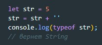
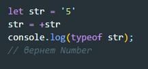
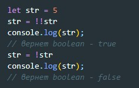

Есть 8 основных типов данных
Этот оператор возвращает тип аргумента. У typeof есть два синтаксиса:
как оператор - typeof x
как функция - typeof(x)
Второй способ преобразования в строку
Второй способ преобразования в число
Второй способ преобразования в boolean
Если значение переменной null то вернутся false, если значение переменной задано, то вернется true
num.toFixed(n) - округляет переменную num до n знаков после запятой
num.isInteger(n) - Проверяет является ли число целым. Вернет false если дробь